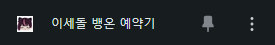
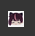
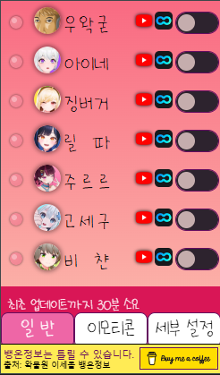

무엇을 해주는 확장프로그램인가요?
우왁굳 및 이세계아이돌 멤버들의 방송 시작을 감지해 자동으로 방송창을 열어주는 확장프로그램입니다. 자동 뱅온 기능 외에도 공지/상태 확인, 편의 기능, 하트포인트 관련 기능을 함께 제공합니다.
SOOP Broadcast Auto Open Extension
우왁굳 및 이세계아이돌 멤버들의 방송 시작을 감지해 자동으로 방송창을 열어주는 확장프로그램입니다. 자동 뱅온 기능 외에도 공지/상태 확인, 편의 기능, 하트포인트 관련 기능을 함께 제공합니다.


최초 설치 직후에는 정보가 비어 있을 수 있으며, 약 30분 후 유튭/뱅온 정보가 처음 갱신됩니다.

하트포인트는 방송 시청과 참여로 모을 수 있는 포인트입니다. 포인트를 모으려는 방송에 들어간 뒤 채팅창 상단 포인트 박스에서 시작 버튼을 눌러야 적립이 시작됩니다.
주기 적립 포인트는 비구독자/1티어/2티어 및 구독 개월 수에 따라 차이가 있습니다. 장기 구독 1티어는 신규 2티어보다 더 많은 포인트를 받을 수도 있습니다.
채팅과 보너스 하트는 구독 여부에 관계없이 동일 기준이며, 추후 밸런스 조정이 있을 수 있습니다.
하트포인트는 배팅 기능 대신 누적/7일/30일 랭킹으로 경쟁할 수 있습니다. 10만 포인트 달성 시 뱅온 예약기 특전이 지급되며, 방송인별 왁세돌 특전을 모을 수 있습니다.
리더보드 바로가기과도하거나 반복적인 채팅은 제재 사유가 될 수 있습니다.
리더보드는 1시간 단위로 업데이트되며, 서버 동기화 시점에 따라 내 점수 반영은 더 늦을 수 있습니다.
ON 옵션은 포인트 박스가 마우스에 반응하지 않을 때만 권장합니다. 최상단 요소로 올라가며 일부 UI와 겹쳐 보일 수 있습니다.
파이어폭스는 자동재생 허용 설정이 필요합니다. 브라우저 설정 > 개인정보 및 보안 > 권한 > 자동 재생에서 모든 웹 사이트 기본값을 허용으로 바꾸거나, 숲 URL만 허용해 주세요.
설정 메뉴를 열지 않아도, 숲 생방송 주소창 왼편의 재생 금지 아이콘에서 해당 URL의 권한을 직접 바꿀 수 있습니다.
일반적으로 그렇지 않습니다. 기본 동작은 1분마다 짧게 수십 KB 수준의 정보만 확인합니다. 생방송 시청 중에는 매크로 사용, UP 버튼 동작 같은 짧은 시점에만 관여하며 화면 정보를 실시간으로 읽고 쓰지 않습니다.
팝업창은 정보량이 많아 일반적인 확장프로그램보다 무거울 수 있지만, 대부분의 환경에서는 사용에 지장을 줄 정도의 랙을 만들지 않습니다.
아래 주소를 열어 `https://play.sooplive.com`의 MEI 점수(`Score`, `Is High`)를 확인해 주세요. `Is High`가 `No`이면 자동재생 제한에 걸린 상태입니다.
새 브라우저/새 PC/쿠키 초기화 이후에는 점수가 다시 낮아질 수 있습니다. 생방송이나 VOD를 여러 번 시청하면 짧으면 하루에서 이틀안에 제한이 해제됩니다.
뱅온 예약기는 1분 주기로 상태를 확인하기 때문에 감지 시점이 최대 1분 이상 지연될 수 있습니다. 뱅온 후 2~3분이 지나도 동작하지 않으면 팝업 설정을 먼저 점검해 주세요.
특히 대상 방송인의 알림 스위치, 동시 방송 3개 이상 켜짐 방지 설정 여부를 확인해 주세요. 설정이 정상인데도 문제가 지속되면 브라우저 재실행 또는 확장프로그램 재설치를 권장합니다.
이미 어떤 방식으로든 한 번 진입했던 방송은 저장되어 중복 진입 방지를 위해 다시 열지 않습니다. 해결되지 않으면 `roman100j12@gmail.com`으로 문의해 주세요.
구독권 선물 기능 버그 수정
UP 버튼 클릭 기능 세분화 (우왁굳/이세돌/커스텀 방송만 선택 가능)
이모티콘 기능 에러 대응
숲 전환 대응
데이터베이스 리딩 방식 변경
뱅온정보 읽기 방식을 실시간 구독형에서 스케줄형으로 변경
미갤이 포함되지 않았던 오류 수정
디시인사이드에서 아프리카TV VOD 링크를 플레이어로 자동 전환하는 기능 추가